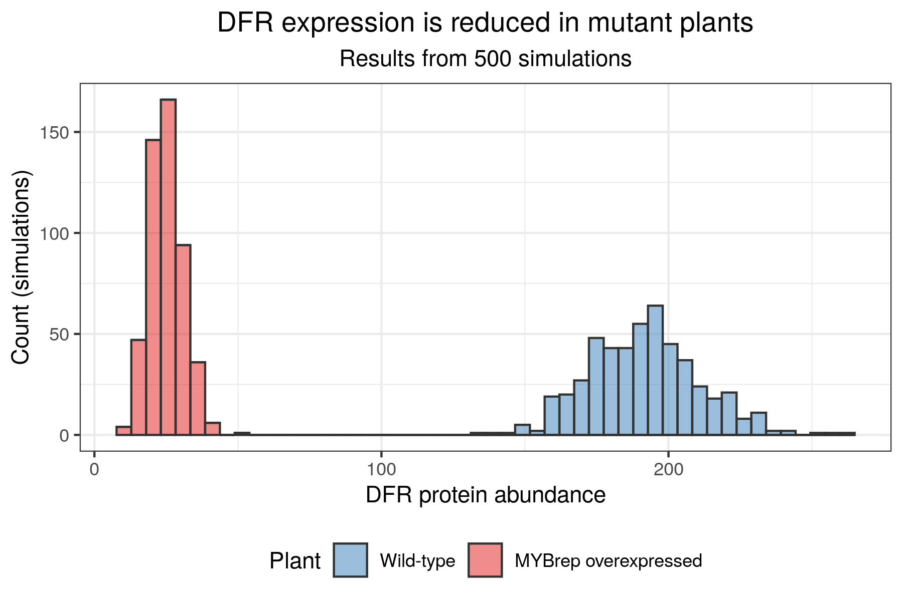

6. Post-processing¶
Checking that the job array worked¶
In the previous section, you have seen how to run a slurm array job. Now it is time to check whether the arrays completed without failing! And if some of the arrays did fail, we would like to identify them to re-run them.
As we have seen in the previous sections, the sacct command is useful to assess the status of submitted jobs. However, especially if you have many arrays, it can get difficult to find what you are looking for in the output. Fortunately, there is a (rather lengthy) command which allows you to obtain the ID of the arrays that failed in a format compatible with slurm. The advantage is that you can directly copy the output of this command and paste it in your slurm script for the array option, in order to re-run only those arrays that failed. Type the following command in the terminal:
In the command, you'll need to replace $JOB_ID by your actual slurm job ID.
Your turn! Did any of your arrays failed? If so, what would you change before re-running them?
Index
TO= Timed OutF= FailedOOM= Out Of Memory
Interpreting the sismonr output¶
Now, it is time to analyse the simulations that we generated.
Copying the simulation outputs to relevant directory¶
In the simulation script, we made sure to save each simulation into a .RData file. First, make sure that you are in the appropriate directory by typing in the terminal:
IMPORTANT: there should be only once person per group that submitted the job, and so the other members of the group should first copy the results of the simulation via the command:
$ cp /nesi/project/nesi02659/sismonr_workshop/workingdir/member456/Exercise_5.5/simulation_* /nesi/project/nesi02659/sismonr_workshop/workingdir/me123/Exercise_5.5/
of course replacing member456 by the username of the person that has the simulations.
Looking at one simulation output¶
Start a new sismonr Jupyter Notebook in the folder containing the simulations output. In the first cell, add and execute:
A single .RData file can be then loaded into R with:
The output of sismonr is a list composed of 3 elements:
-
Simulation: a data-frame with the simulation results. Columnstime,Indandtrialindicate the time (in seconds) in the simulation, in silico individual and trial (i.e. repeat of the simulation), respectively. The remaining columns each correspond to one molecular species present in the simulated system, and the values correspond to their abundance for the given time, individual and trial; -
runningtime: a vector giving, for each in silico individual, the running time (in seconds) of the simulations (across all trials); -
stochmodel: a Julia proxy object, giving the stochastic model used for the simulation. You probably won't ever need to work with this object.
We are only interested in the Simulation data-frame.
If you try to load one of your simulation files and have a look at this data-frame, it should look something like this (note that I'm using as_tibble() to get a nicer visualisation of the data-frame):
# A tibble: 4,804 × 203
time trial R1GCN1 P1GCN1 R4GCN2 P4GCN2 R5GCN2 P5GCN2 R6GCN1 P6GCN1 R2GCN2 P2GCN2 R7GCN2 P7GCN2 R5GCN1 P5GCN1 R3GCN1 P3GCN1 R4GCN1 P4GCN1 R3GCN2 P3GCN2
<dbl> <dbl> <dbl> <dbl> <dbl> <dbl> <dbl> <dbl> <dbl> <dbl> <dbl> <dbl> <dbl> <dbl> <dbl> <dbl> <dbl> <dbl> <dbl> <dbl> <dbl> <dbl>
1 0 1 0 0 0 0 0 0 0 0 10 100 0 0 0 0 50 500 0 0 50 500
2 1 1 4 0 0 0 0 0 0 0 10 0 1 0 0 0 50 445 0 0 51 455
3 2 1 7 0 0 0 0 0 0 0 9 0 2 0 0 0 51 444 0 0 52 457
4 3 1 13 0 0 0 0 0 0 0 10 0 4 0 0 0 51 448 0 0 52 453
5 4 1 21 1 0 0 0 0 0 0 10 0 6 0 0 0 51 447 0 0 53 452
6 5 1 22 2 0 0 0 0 1 0 10 0 7 0 0 0 50 448 0 0 52 453
7 6 1 24 0 0 0 0 0 1 0 10 0 7 0 0 0 50 446 0 0 52 454
8 7 1 25 0 0 0 0 0 2 0 10 1 7 0 0 0 50 447 0 0 52 454
9 8 1 28 1 0 0 0 0 2 0 10 0 7 0 0 0 51 446 0 0 51 456
10 9 1 34 0 0 0 0 0 2 0 10 0 7 0 0 0 50 445 0 0 51 457
# … with 4,794 more rows, and 181 more variables: R2GCN1 <dbl>, P2GCN1 <dbl>, R1GCN2 <dbl>, P1GCN2 <dbl>, R7GCN1 <dbl>, P7GCN1 <dbl>, R6GCN2 <dbl>,
# P6GCN2 <dbl>, CTC1_P2GCN1_P2GCN1 <dbl>, CTC1_P2GCN1_P2GCN2 <dbl>, CTC1_P2GCN2_P2GCN1 <dbl>, CTC1_P2GCN2_P2GCN2 <dbl>, CTC5_P4GCN1_P4GCN1 <dbl>,
# CTC5_P4GCN1_P4GCN2 <dbl>, CTC5_P4GCN2_P4GCN1 <dbl>, CTC5_P4GCN2_P4GCN2 <dbl>, CTC2_P1GCN1_P1GCN1 <dbl>, CTC2_P1GCN1_P1GCN2 <dbl>,
# CTC2_P1GCN2_P1GCN1 <dbl>, CTC2_P1GCN2_P1GCN2 <dbl>, CTC6_P3GCN1_CTC5_P4GCN1_P4GCN1 <dbl>, CTC6_P3GCN1_CTC5_P4GCN1_P4GCN2 <dbl>,
# CTC6_P3GCN1_CTC5_P4GCN2_P4GCN1 <dbl>, CTC6_P3GCN1_CTC5_P4GCN2_P4GCN2 <dbl>, CTC6_P3GCN2_CTC5_P4GCN1_P4GCN1 <dbl>,
# CTC6_P3GCN2_CTC5_P4GCN1_P4GCN2 <dbl>, CTC6_P3GCN2_CTC5_P4GCN2_P4GCN1 <dbl>, CTC6_P3GCN2_CTC5_P4GCN2_P4GCN2 <dbl>,
# CTC3_P3GCN1_CTC1_P2GCN1_P2GCN1 <dbl>, CTC3_P3GCN1_CTC1_P2GCN1_P2GCN2 <dbl>, CTC3_P3GCN1_CTC1_P2GCN2_P2GCN1 <dbl>, …
Notice that each species has a suffix on the form GCN1 or GCN2. This is because sismonr tracks the allele of origin of each molecule. As we are simulating a diploid system, each gene is present in 2 copies (two alleles), and so the RNAs and proteins of a given gene can originate from either of these two alleles. This can be really handy when looking at the impact of mutations of different alleles. In this case however, we don't care about the allele of origin of the different species. Instead, we would rather have the abundance of all RNAs or proteins for a given gene into one column. To obtain that, we can use the sismonr function mergeAlleleAbundance:
as_tibble(merged_simulation)
# A tibble: 4,804 × 27
time trial Ind R1 P1 R4 P4 R5 P5 R6 P6 R2 P2 R7 P7 R3 P3 CTC1 CTC5 CTC2 CTC6 CTC3 CTC7 CTC8 CTC4
<dbl> <dbl> <chr> <dbl> <dbl> <dbl> <dbl> <dbl> <dbl> <dbl> <dbl> <dbl> <dbl> <dbl> <dbl> <dbl> <dbl> <dbl> <dbl> <dbl> <dbl> <dbl> <dbl> <dbl> <dbl>
1 0 1 Ind1 0 0 0 0 0 0 0 0 20 200 0 0 100 1000 0 0 0 0 0 0 0 0
2 1 1 Ind1 14 0 0 0 0 0 0 0 20 1 1 0 101 900 0 0 0 0 100 0 0 0
3 2 1 Ind1 16 1 0 0 0 0 0 0 19 1 2 0 103 901 0 0 0 0 100 0 0 0
4 3 1 Ind1 25 0 0 0 0 0 0 0 20 2 4 0 103 901 1 0 0 0 98 0 0 1
5 4 1 Ind1 32 1 0 0 0 0 0 0 20 2 6 0 104 899 0 0 0 0 96 0 0 4
6 5 1 Ind1 39 2 0 0 0 0 1 0 18 0 8 0 102 901 1 0 0 0 96 0 0 4
7 6 1 Ind1 40 0 0 0 0 0 1 0 18 0 8 0 102 900 0 0 0 0 95 0 0 4
8 7 1 Ind1 46 1 0 0 0 0 2 0 18 1 9 0 102 901 0 0 0 0 94 0 0 6
9 8 1 Ind1 54 2 0 0 0 0 2 0 18 1 10 0 102 902 0 0 0 0 93 0 0 7
10 9 1 Ind1 65 0 0 0 0 0 3 0 18 1 10 0 101 902 0 0 0 0 90 0 0 10
# … with 4,794 more rows, and 2 more variables: CTC9 <dbl>, CTC10 <dbl>
This time, we have one column for the RNA abundance of each gene, and idem for the proteins and regulatory complexes. This will be much more practical to create some plots.
One more thing to note: in each simulation output, the trial column will be filled with 1 and 2. This is something to keep in mind when we'll load all the simulation outputs, as ideally we would like to have values from 1 to 500.
Importing all simulation results in R¶
The challenge here is we don't have only 1 .RData file; in fact, we've just created 250 of them per group! We will need to use a loop of some sort to import all simulations in R.
Listing all the simulation files¶
The first thing we need is a list of all simulation files. There is a function in R just for that: list.files. It will list all files present in the given directory that match a specific pattern.
## Don't forget to update the pattern to reflect how you named your simulation outputs
## For example, replace 'group_1' by your group ID
sim_files <- list.files(path = "./", pattern = "_group_1.RData")
head(sim_files)
[1] "simulation_1_group_1.RData" "simulation_10_group_1.RData" "simulation_100_group_1.RData" "simulation_101_group_1.RData"
[5] "simulation_102_group_1.RData" "simulation_103_group_1.RData"
You can check that there are 250 files:
Creating a loop to import all simulations¶
To import each of these simulations, we could use a basic for loop, which would look something like this:
# DO NOT RUN
sim_df <- c()
for(file in sim_files){
load(file)
sim_df <- bind_rows(sim_df, sim$Simulation)
}
Which is really not ideal from a memory and computational time perspective. However, there is a nice alternative, which relies on the package purrr. Specifically, purrr provides a function, reduce, which applies a given function to a list of data-frames. In our case, if we can obtain a list of all simulations, we can apply the bind_rows function from dplyr to it, through reduce, to combine the individual simulations into one data-frame. And an added bonus: it works with the tidyverse pipe!
To get the list of data-frame, the R function lapply() does just what we want: it acts as a for loop, except that it returns the output of the different iterations as a list. So we could use something like:
# AGAIN DO NOT RUN
sim_df <- lapply(sim_files, function(file){
load(file)
sim$Simulation
}) %>%
reduce(bind_rows)
Modifying the simulation outputs¶
But as we've seen earlier, there are some modifications that we want to apply to the simulation results to make it more interesting for us. One of these modifications is to apply the mergeAlleleAbundance function (changes in the code are highlighted in red for lines that are removed and green for lines that are added):
sim_df <- lapply(sim_files, function(file){
load(file)
- sim$Simulation
+ mergeAlleleAbundance(sim$Simulation)
}) %>%
reduce(bind_rows)
The second modification is about the trial column. As it is, the script with return one big data-frame with all 500 simulations, but the trial column will be filled with 1 and 2 only, so we won't be able to differentiate the simulations. We can correct that by keeping track of the index of the file that we are currently reading. Then we have to make the transformation:
Maybe you noticed that Simulation index = 2*(File index - 1) + trial:
- sim_df <- lapply(sim_files, function(file){
+ sim_df <- lapply(1:n_sim, function(i){
+ file <- sim_files[i]
load(file)
- mergeAlleleAbundance(sim$Simulation)
+ mergeAlleleAbundance(sim$Simulation) %>%
+ mutate(trial = trial + 2*(i - 1))
}) %>%
reduce(bind_rows)
Finally, we'll transform the data-frame into a tibble, just to make our lives easier:
sim_df <- lapply(1:n_sim, function(i){
file <- sim_files[i]
load(file)
mergeAlleleAbundance(sim$Simulation) %>%
mutate(trial = trial + 2*(i - 1))
}) %>%
- reduce(bind_rows)
+ reduce(bind_rows) %>%
+ as_tibble()
The final code (which is the one you want to run) is:
sim_df <- lapply(1:n_sim, function(i){
file <- sim_files[i]
load(file)
mergeAlleleAbundance(sim$Simulation) %>%
mutate(trial = trial + 2*(i - 1))
}) %>%
reduce(bind_rows) %>%
as_tibble()
Visualising the simulations¶
Now that we have all 500 simulations into one data-frame, we can easily visualise them! We'll start by using the plotSimulation function from sismonr. We first have to load the sismonr_anthocyanin_system.RData object, which contains the correspondence between species IDs and names, and the colours that we want to use for the plots:
plotSimulation(sim_df,
molecules = names(colours),
mergeComplexes = FALSE,
labels = id2names[names(colours)],
colours = colours)
This should look very similar to the first plot we've made of the result of one simulation. This time however, the average abundance of a given species across all simulations is given with a solid line, and the minimum and maximum abundance across the simulations is represented as a shaded area. This plot is really useful to visualise the biological variation that could be observed experimentally for genetically identical plants.
Comparing DFR expression between the two plants¶
One of the interesting results from these simulations is that we can confirm that the expression of anthocyanin biosynthesis-related genes is reduced in the mutant plant. We can visualise it, by creating a graph (say, a histogram, although a boxplot or density plot would work just as well) of the DFR protein abundance at t = 20 minutes (t = 1,200s) in the two plants. As a reminder, the DFR gene is gene 7 in our sismonr GRN. In the simulation data-frame, the column R7 corresponds to the RNAs of gene 7, and the column P7 corresponds to the proteins of gene 7.
Have a go at it first! When you are ready, one possible plot is presented below:
Example
sim_df %>%
filter(time == 1200) %>% ## only keep the last time point of each simulation
select(trial, Ind, "P7") %>% ## we want to focus on DFR proteins abundance
## for a better plot, show wild-type plant first, and give each individual a nice label
## (rather than "Ind1" and "Ind2")
mutate(Ind = factor(Ind,
levels = c("Ind1", "Ind2"),
labels = c("Wild-type", "MYBrep overexpressed"))) %>%
## Plot section:
ggplot(aes(x = P7, fill = Ind)) +
geom_histogram(alpha = 0.5, colour = "gray20", bins = 50) + ## alpha = transparency of the bars
scale_fill_brewer(palette = "Set1", direction = -1) + ## choose nice colours
labs(x = "DFR protein abundance", ## x axis title
y = "Count (simulations)", ## y axis title
fill = "Plant", ## colour legend title
title = "DFR expression is reduced in mutant plants", ## informative title
subtitle = "Results from 500 simulations") + ## and subtitle
theme_bw() + ## white background, black axes, etc
theme(legend.position = "bottom",
plot.title = element_text(hjust = 0.5), ## center the title
plot.subtitle = element_text(hjust = 0.5), ## and the subtitle
text = element_text(size = 18)) ## and increase font size

Conclusion¶
Yay, you've reached the end of this workshop! Feel free to make use of this knowledge in your own research projects :)